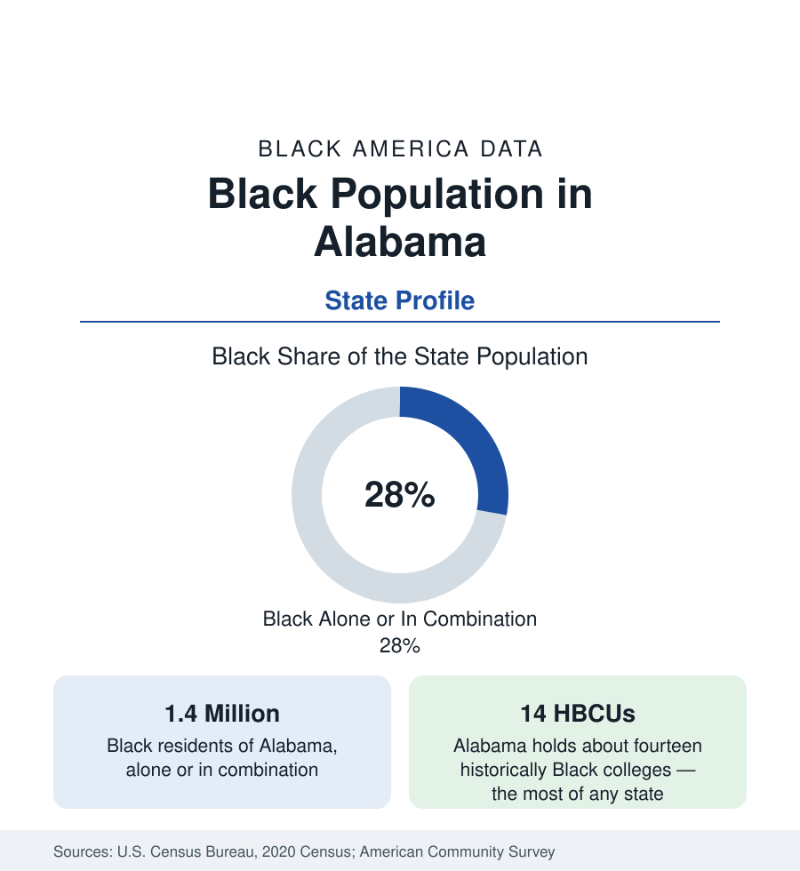

Black Census
Black Population in Alabama: The Black Belt State
About 1.4 million Black Alabamians — more than one in four residents — span Birmingham, Montgomery, and the Black Belt counties. The census profile.

Alabama holds about 1.4 million Black residents — Black alone or in combination — more than one in four of its people, with Black alone at about 1.3 million, or 26 percent. The state's Black geography gave the nation a term: the Black Belt, named first for its dark, rich soil and then for the people enslaved to work it, whose descendants still form majorities across the region's counties. Around that rural core stand three metropolitan Black populations — Birmingham, Montgomery, and Mobile — and the densest concentration of historically Black colleges in the United States. This article profiles the population in the census data.
The Black Belt
The Black Belt arcs across Alabama's midsection from the Georgia line to Mississippi: a band of chalk-soil prairie counties — Wilcox, Lowndes, Dallas (whose seat is Selma), Greene, Sumter, Marengo, Hale, Perry, and their neighbors — where enslaved majorities worked the cotton economy and where Black majorities, in several counties exceeding 70 percent, persist today. These counties record the state's — and among the nation's — most difficult economic indicators: the lowest incomes, the highest poverty rates, and persistent population decline as younger residents leave for the metros. They also hold an outsized place in the nation's civic history: Lowndes County's freedom movement, Selma's voting-rights marches, and Montgomery's bus boycott all arose from this geography, within a day's travel of one another.
Birmingham, Montgomery, Mobile
Birmingham, the state's largest metro, holds its largest Black population: the city itself is more than two-thirds Black — roughly 68 percent — and the metro's Black residents number in the several hundred thousands, suburbanized increasingly into the surrounding counties. The city's Black community was built by the steel and coal economy, and its institutions — Miles College, the Sixteenth Street Baptist Church, a large medical sector around the University of Alabama at Birmingham — anchor the north of the state. Montgomery, the capital, is roughly three-fifths Black and home to Alabama State University; its Black population carries the dual history of the Confederacy's first capital and the modern movement's first great victory, a juxtaposition the census maps in a city of 200,000. Mobile, the Gulf port, is just over half Black within the city, with a Black history reaching to the colonial Gulf Coast and the last slave ship's arrival in its bay.
The HBCU State
Alabama's institutional signature is its historically Black colleges: about fourteen, the most of any state — Tuskegee University, founded by Booker T. Washington and home of the Tuskegee Airmen's training ground; Alabama State and Alabama A&M, the public land-grant pair; Miles, Stillman, Talladega, Selma University, Oakwood, and a set of smaller church-founded colleges in nearly every region. For a state of five million people, the density is unmatched, and it shows in the data: Alabama's Black educational attainment is carried substantially by institutions within the state, and its Black professional class is educated at home at rates the migration data reflect in unusually low out-migration of the credentialed.
Composition and Change
The estimates describe a Black Alabama that is stable in share and slow-growing in count: natural increase offset by modest net out-migration to Georgia and Texas, an age structure older than the growth states', and a foreign-born share among the nation's smallest — a deep-rooted, native-born population in the same pattern as Mississippi's. Huntsville, the state's fastest-growing metro on its defense and space economy, is the exception: its Black population, anchored by Alabama A&M and Oakwood in the city itself, grows with the region and records the state's strongest Black economic indicators.
Reading the Alabama Numbers
Alabama's state average, like Georgia's, blends regimes: a rural Black Belt at the hard end of the national distributions, three mid-sized metros in the middle, and one booming technology region. The share figure — more than one in four — and the HBCU density together define the profile: a state where Black life is demographically central and institutionally deep, working against economic indicators that the county tables beneath this profile document without softening.
The county profiles beneath this state account — Jefferson, Montgomery, Mobile, Madison, and the Black Belt counties among them — provide the local figures for each of the regions described above.
More in Black Census
The Black Population of the United States: Size, Definitions, and Distribution
The Black population of the United States totals 52.8 million — 15.4 percent of the nation. How the Census Bureau defines and counts the population, and where it lives.
Black Median Household Income in the United States
Black median household income stands at $56,490 in the Census Bureau's annual income report — how the figure is measured, how it compares, and what drives it.
The Black Poverty Rate: Levels, Children, and the Long Trend
The official Black poverty rate is 17.1 percent — against 11.1 percent nationally and 7.7 percent for non-Hispanic White Americans. How poverty is measured and what the data show.
Source: U.S. Census Bureau, 2020 Census; American Community Survey; Population Estimates Program.